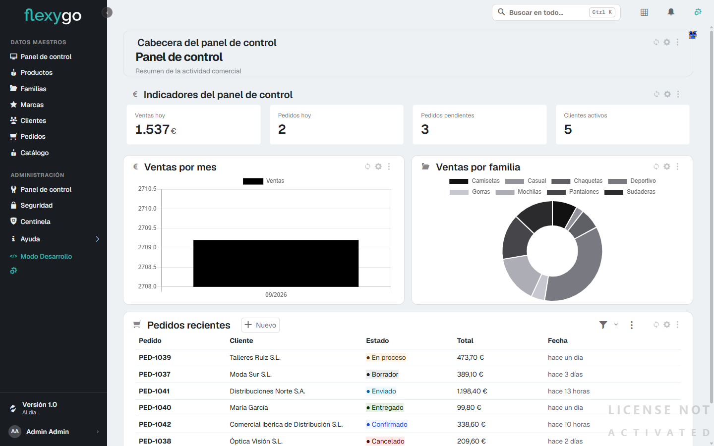
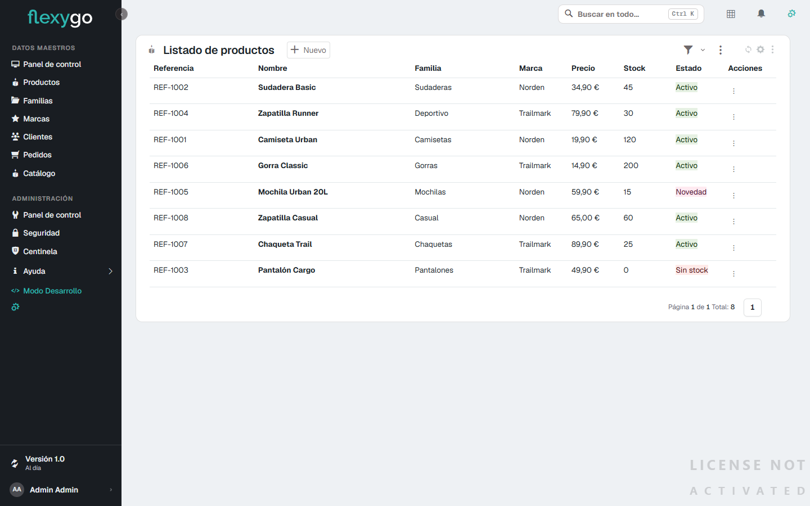
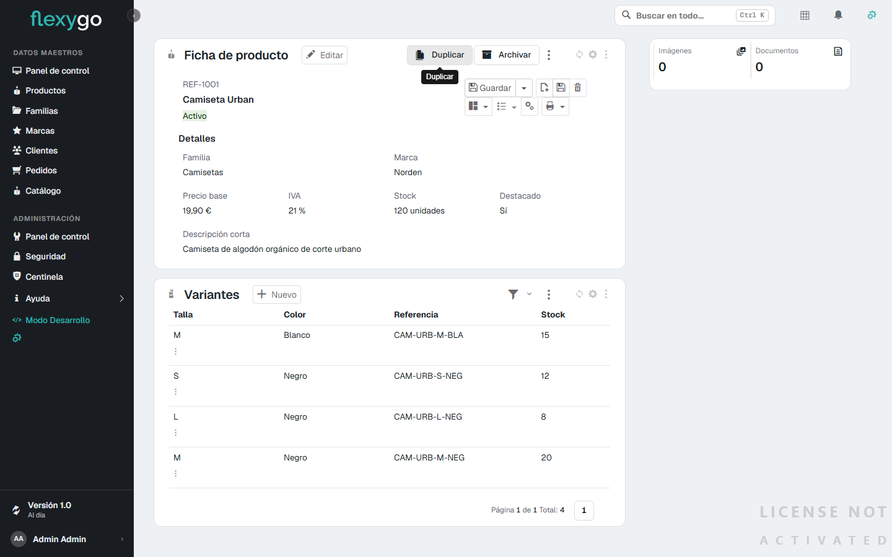
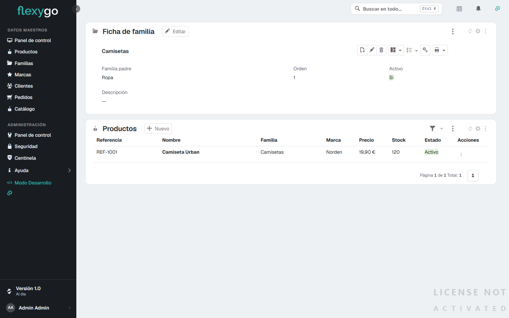
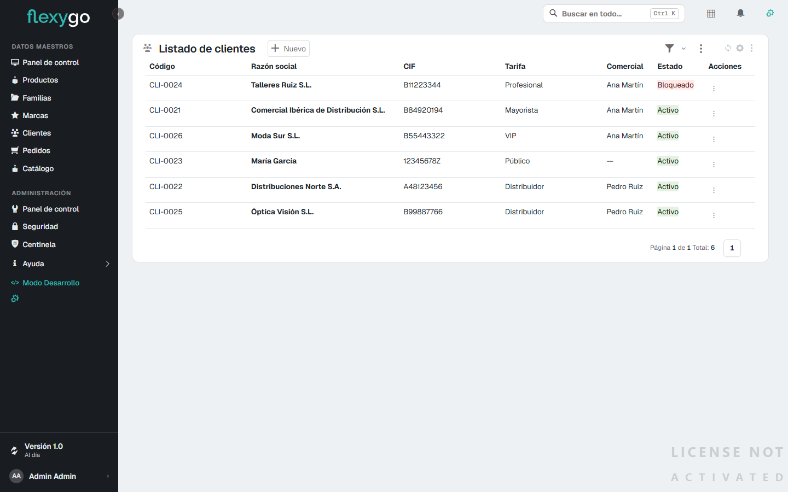
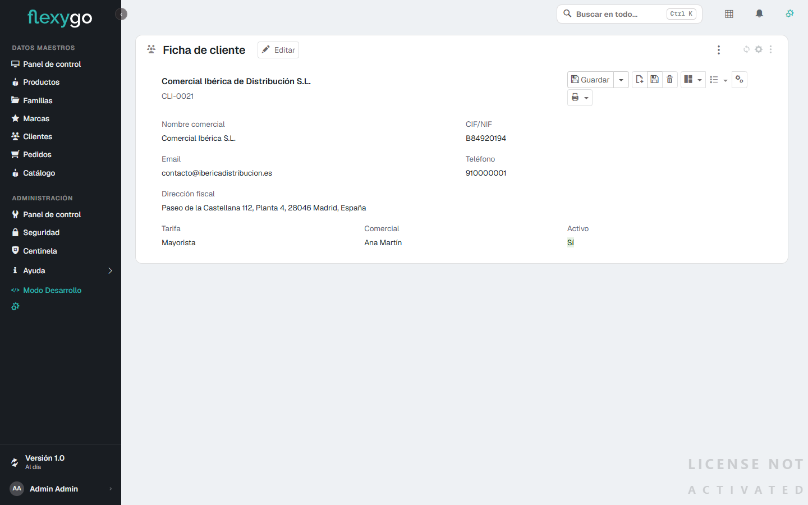
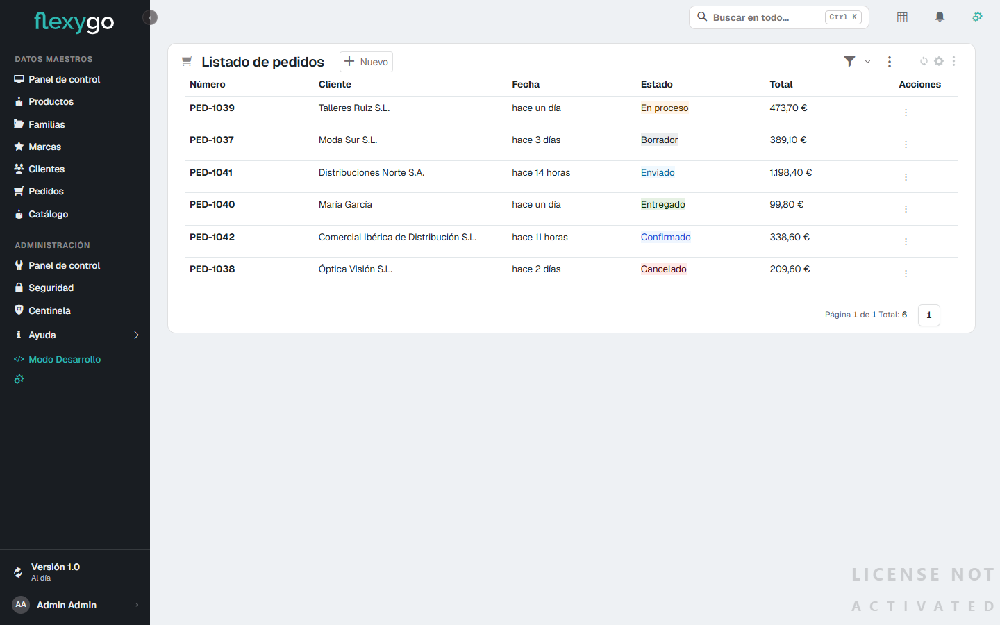
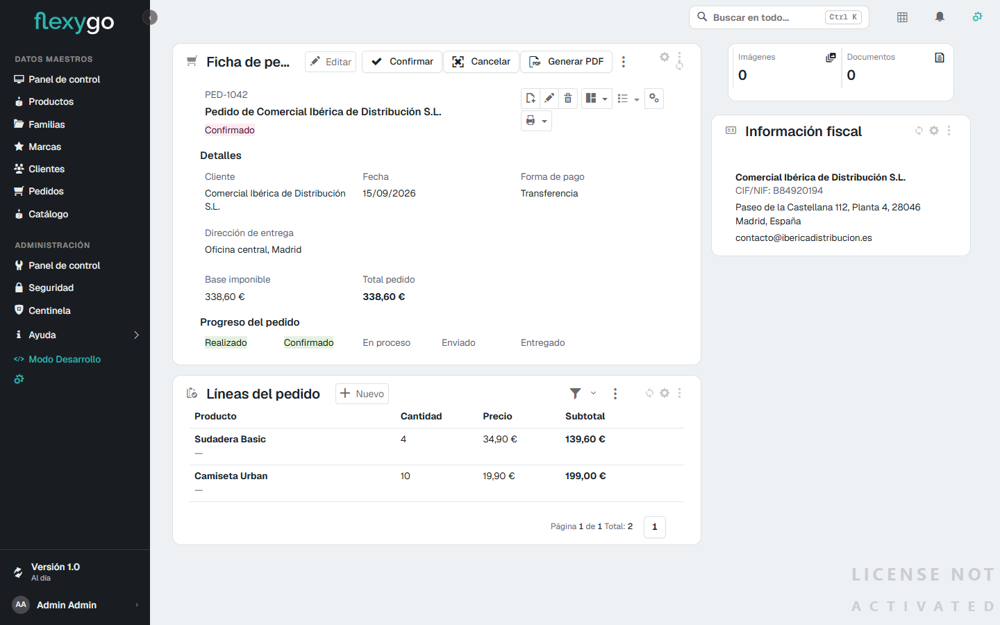
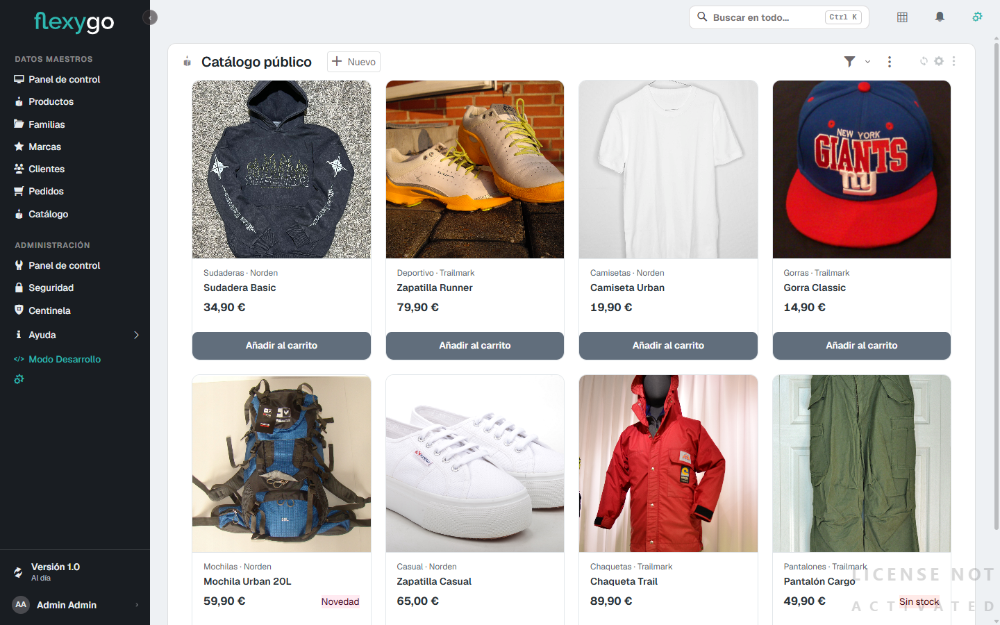

Desarrollo catalogo-demo · comprobación funcional y comparación de diseño de las 4 bloques construidos, pantalla por pantalla, con navegador real.
26/26 tareas, 4/4 bloques. Las 7 pantallas con diseño aprobado tienen su comparación fila a fila cerrada (misma / no aplica / diferente con causa y decisión). 3 defectos reales de datos y color se corrigieron en vivo. 6 acciones que solo existían de mentira ahora son procesos reales, probados creando y borrando registros de prueba. El barrido de calidad (/flx-quality) encontró y cerró 3 ausencias más — buscador, orden por columna, enlace de vuelta — en 11 pantallas. Quedan 2 huecos de plataforma registrados y 2 piezas de alcance mayor decididas para un desarrollo posterior — ninguno es un error, los dos están documentados y decididos, no abandonados. flexygo_development_status confirma el desarrollo completo: revisado, verificado y barrido de calidad, sin ninguna tarea reabierta.
Cada pantalla se abrió en un navegador real, con sesión de administrador y los datos del pSeed_ResetDemoData, y se comparó fila a fila contra la maqueta aprobada en Stitch (paleta, tipografía, fila de lista, ficha, badges, espaciado, iconografía, composición, densidad, navegación, cromado de módulo, barra de acciones).
| Pantalla | Funcional | Diseño |
|---|---|---|
| Panel de control | OK | 12/12 cerradas |
| Listado de productos | OK | 12/12 cerradas |
| Ficha de producto | OK | 12/12 cerradas |
| Listado de clientes | OK | 12/12 cerradas |
| Listado de pedidos | OK | 12/12 cerradas |
| Ficha de pedido | OK | 12/12 cerradas |
| Catálogo público | OK | 12/12 cerradas |
| Familias (listado + ficha) | OK — corregida en esta pasada | sin maqueta aprobada |
| Marcas · Ficha de cliente | OK | sin maqueta aprobada |
Ninguno se dejó anotado para más tarde: se corrigió, se volvió a mirar en pantalla y se registró con su medición.
CASE de color comparaba contra las familias padre, pero la consulta agrupa por familia hija: casi todas las porciones salían del mismo gris. SQL del módulo de gráficaAdemás de comparar pantallas, se usó la aplicación de verdad sobre dos objetos del bloque, creando y borrando sus propios registros de prueba:
| Objeto | Crear | Proceso | Borrar |
|---|---|---|---|
| Producto | Duplicar → copia + 4 variantes | Archivar → ModifiedDate actualizado | Sin rastro |
| Pedido | Confirmar → Borrador→Confirmado | Generar PDF → 32 KB descargados | Estado restaurado |









Pedidos que este servidor no sabe hacer, registrados para priorizarlos — no son errores de lo construido.
web2026 / skin skin2026.--nav-color en pantalla resuelve a #191d22 (valor propio de skin2026), no al #1c1b1d configurado. flexygo_set_skin_variable solo escribe en la skin flexy2022, sin parámetro para elegir otra.ExecuteStatement.flexygo_execute_dml.Una copia fiel de la maqueta puede seguir siendo una aplicación pobre: una foto no tiene segunda página, ni lista vacía, ni buscador. /flx-quality comprueba los doce puntos de ese catálogo en cada pantalla del bloque. Se encontraron y cerraron 3 ausencias reales, más un defecto de plataforma que las mismas correcciones destaparon.
data-sort. Probado en vivo: un clic en "Precio" reordenó la lista de menor a mayor. list-no-column-sortskinBundle.css) oculta .cntBodyHeader siempre que no contenga un chip de filtro o un botón — sin contar el buscador como contenido. El buscador quedaba en el HTML con 0×0 px, invisible pese a existir. Corregido con una regla de plugin con ámbito a los 6 módulos de este proyecto, nunca a toda la instalación.Dos entradas del catálogo se revisaron y no aplicaban: el orden por columna en el Catálogo público (rejilla de tarjetas, sin cabecera) y el buscador en el widget "Pedidos recientes" del panel de control (vistazo de 8 pedidos de los últimos 60 días, acotado por diseño).
Todo lo de aquí está decidido y documentado — no es una lista de pendientes sueltos.
El documento original (docs/Catálogo Demo Flexygo - Funcionalidades.md, repartido en docs/funcionalidades/00…13) describe una aplicación mucho más grande que lo que este desarrollo construyó: 101 puntos repartidos en 14 áreas. catalogo-demo implementó el modelo funcional principal (punto 100) — Cliente, Producto, Pedido y sus alrededores inmediatos — con la profundidad y el rigor de todo este informe. El resto es trabajo real, no una lista de retoques, y necesita su propio paso por /flx-context → /flx-plan → /flx-discuss antes de tocar código: varias piezas (carrito de verdad, favoritos, presupuestos) no pueden construirse con solidez hasta que exista una identidad de cliente real en el catálogo público — la misma pieza que D-9 dejó pendiente.
| Área | Contenido | Estado |
|---|---|---|
| 00 | Visión general | Cubierta |
| 01 | Usuarios, accesos y seguridad | Sin construir |
| 02 | Catálogo de productos | Cubierta en su mayoría |
| 03 | Clientes y comercial | Cubierta en su mayoría |
| 04 | Precios, tarifas y promociones | Parcial — solo tarifas simples |
| 05 | Favoritos, listas, comparador, carrito y pedidos | Parcial — pedidos reales, carrito placeholder |
| 06 | Presupuestos y postventa | Sin construir |
| 07 | Notificaciones y comunicación | Sin construir |
| 08 | Dashboards e informes | Parcial — 1 panel admin |
| 09 | Administración y backoffice | Parcial — CRUD + 2 procesos |
| 10 | Contenido web público | Parcial — catálogo sin más secciones |
| 11 | Automatizaciones e IA | Sin construir |
| 12 | Integraciones y API | Sin construir |
| 13 | Datos demo y modelo | Cubierta (a menor escala que la sugerida) |
Siguiente paso recomendado para retomar: abrir un nuevo desarrollo con /flx-new-development sobre el área 01 (acceso anónimo real) — es la pieza de la que dependen 05, 06 y buena parte de 10.